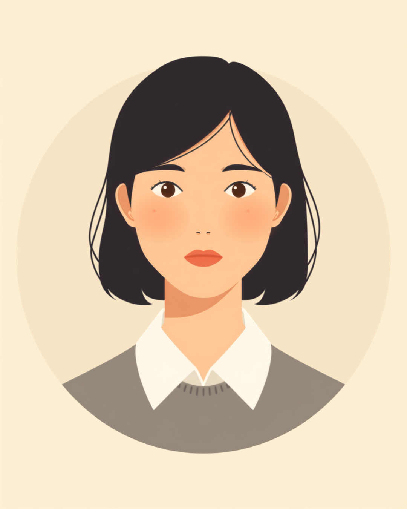

名刺を差し出した瞬間、相手の表情が一瞬止まった。受け取ろうとした指先が、こちらの指に軽く触れたときのことだ。「あ、すみません、手が冷たくて」と笑ってごまかしたものの、名刺を持っていた指はまだ白っぽく、感覚も少し鈍いままだった。この記事では、レイノー現象がある人が名刺交換やパソコン作業の場面で感じる気まずさについて、就労支援の現場で聞いてきた声をもとに整理しました。
PR


名刺を渡した瞬間、指の冷たさに気づかれる

レイノー現象は、寒さやエアコンの冷気、緊張などがきっかけで指先の血管が急に収縮し、白っぽく変色したり感覚が鈍くなったりする症状です。就労支援の現場でも、名刺交換や書類のやり取りの場面での気まずさを聞くことがあります。まめざる
就労支援の現場で関わってきた中で、レイノー現象がある方から、名刺交換のときの気まずさを聞くことが何度かありました。冷房の効いた会議室で少し待たされたあと、名刺を差し出す。それだけの動作なのに、指先はもう白っぽくなっていて、相手の手に触れた瞬間に「冷たっ」という顔をされる。そのたびに、症状の説明をするべきか、笑ってごまかすべきか、一瞬で判断を迫られるようです。
厄介なのは、この症状が自分の意思とは関係なく起きることです。緊張すると余計に血管が収縮しやすくなるとされているため、「今日は大事な商談だから、指先だけは温かくしておこう」と思っても、その気負い自体が症状を強めてしまうことがあるといいます。
!
ここで紹介している場面は、複数の方から伺った経験を組み合わせて再構成したものです。レイノー現象の出方や、背景にある病気の有無には個人差が大きいため、この記事の内容がそのまま当てはまるとは限りません。
「営業なので名刺交換は毎日のようにあるんですけど、冬場は特にひどくて。名刺を渡した瞬間に相手の指がピクッとなるのが分かるんです。『すごい冷え性なんですね』って言われることが多くて、そのたびに『そうなんですよ〜』って流してるんですけど、正直、冷え性とはちょっと違うんだよなって、心の中でずっと思ってます。3年くらいこの状態なんですけど、いまだに慣れないです。」
30代・男性（レイノー現象・営業職）
パソコンのキーボードでも、同じことが起きる
名刺交換のように人に見られる場面だけでなく、一人でパソコン作業をしているときにも症状が出ることがあります。指先の感覚が鈍くなることで、キーを押したはずなのに反応していなかったり、隣のキーを一緒に押してしまったりして、誤字が増える。傍から見れば分からない変化なので、「今日は集中力がないな」と自分で自分を責めてしまうこともあるようです。
人に見られる場面と見られない場面とで、しんどさの種類が変わる
i
タイピングや振動する工具の使用など、指先への反復的な刺激がレイノー現象のきっかけになりやすいという情報もあります。デスクワークでも無縁の症状ではないようです。
「事務職で一日中パソコンなんですけど、冬になるとほんとにタイプミスが増えて。指先の感覚がふわふわしてる感じで、Enter押したつもりが押せてなかったり、隣のキー押しちゃったり。最初は『今日集中できてないな、だめだな』って自分を責めてたんですけど、指先を見たら白くなってて、それで初めて『あ、これのせいか』って気づきました。気づくまでの半年くらい、ずっと自分のせいだと思ってました。」
20代・女性（レイノー現象・事務職）
「冷え性でしょ」で片づけられる違和感
レイノー現象について周りに話すと、多くの場合「冷え性なんだね」という一言で終わってしまいます。悪気があるわけではなく、むしろ気遣いのつもりで言われることがほとんどのようです。ただ、本人からすると「冷え性」という言葉で片づけられることへの小さな違和感が残るという声を聞きます。手袋やカイロで温めても症状が完全には収まらないことや、症状が出ている間は感覚そのものが鈍くなることは、なかなか伝わりにくいようです。
相談の一コマ

相談者
上司に「手袋すればいいじゃん」って言われたんですけど、手袋してても会議中は外さないといけないし、結局意味ないんですよね。かといって、それ以上説明する気力もなくて。
まめざる
「手袋すればいい」で終わらせられると、分かってもらえていない感じがしますよね。ただ、上司の方も悪気があって言っているわけではなく、単に対策のイメージが湧いていないだけということも多いようです。
相談者
じゃあ、どこまで説明すればいいんでしょうか。毎回細かく病気の話をするのも気が引けます。
まめざる
病名まで説明する必要はないと思います。「冷えというより、血流の関係で一時的に感覚が鈍くなることがある」くらいの一言があるだけでも、単なる冷え性とは違うことが伝わりやすくなるという声を聞きます。
「冷え性でしょ」と言われるたびに訂正する必要はありません。ただ、自分の中で症状を正確に理解しておくことは、いざというときに一言添える余裕につながるようです。
職場でできる、ちょっとした工夫
相談してみやすい、小さな工夫の例
- 会議室では冷気の吹き出し口から離れた席に座らせてもらう
- デスクにひざ掛けやアームカバーを置いておくことを認めてもらう
- 名刺交換の前に、手を軽く温めておく時間を確保する
- タイピングミスが増える時期は、提出前の見直しを一手間増やす
どれも大掛かりな配慮ではなく、周りへの影響が少ないものばかりです。いきなり全部を相談する必要はなく、一番負担が大きい場面から一つずつ試してみるくらいの気持ちで十分なようです。
i
症状が強く出る、痛みを伴う、指先の色の変化が長時間続くといった場合は、我慢せず医療機関に相談することが勧められています。基礎疾患が隠れているケースもあるとされています（2026年9月時点の情報）。
レイノー現象の出方や、背景にある病気の有無、必要な配慮の内容には個人差があります。この記事の内容がそのまま当てはまるとは限らないため、気になる症状がある場合は自己判断せず医療機関に相談することをおすすめします。
指先が冷たいことも、それを説明するのが面倒に感じることも、どちらも自然な反応です。「冷え性でしょ」で片づけられたときに感じる小さな違和感を、無理に飲み込まなくてもいいはずです。
よくある質問
Q. レイノー現象は病院に行った方がいいですか？
症状が気になる場合は、皮膚科やリウマチ膠原病内科などへの相談が勧められています。指先の色の変化が強い場合や痛みを伴う場合は、背景に別の病気が隠れていることもあるとされているため、早めに医師に相談することをおすすめします（2026年9月時点の情報）。
Q. 職場でエアコンの温度を下げてもらうよう頼んでもいいですか？
合理的配慮の相談として伝えてみる価値はあるとされています。ただし全員の快適さに関わることなので、席の位置を変えてもらう、ひざ掛けやアームカバーの使用を認めてもらうなど、周りへの影響が少ない工夫から相談してみるケースも多いようです。
Q. レイノー現象があると障害者手帳の対象になりますか？
レイノー現象そのもので手帳が交付されるかどうかは、原因となっている病気や症状の程度によって個人差が大きいとされています。気になる場合は、自治体の窓口や医療機関に確認することをおすすめします（2026年9月時点の情報）。
Q. 名刺交換の前に、指が冷たいことを伝えておいた方がいいですか？
必ず伝える必要があるわけではないとされていますが、事前に一言添えておくことで相手が驚く場面を減らせたという声もあります。「手先が冷えやすい体質で」くらいの軽い一言で十分というケースが多いようです。
Q. タイピングのミスが増えるのはレイノー現象のせいですか？
指先の感覚が鈍くなることで、キーの押し間違いが増えたと感じる方はいるようです。ただしミスの原因は他にも様々考えられるため、気になる場合は自己判断せず、必要に応じて医師に相談することも一つの方法です。
症状そのものより、気づかれたときの気まずさのほうが重く感じられることがある
PR


一人で抱え込む前に、今の気持ちを話してみませんか
「まだ迷っている」段階でも大丈夫です。mimemimeの無料相談は、今の状況の整理から一緒に始められます。
無料で話してみる
この記事に、聞いてみたいことはありますか？
「自分の場合はどうなんだろう」と思ったことを、気軽に書いてみてください。いただいた質問は個別にお返事したうえで、匿名で記事にすることがあります。
おのざる
mimemime代表。就労支援の現場経験をもとに、障がいのある方の働く不安に寄り添う記事を執筆。